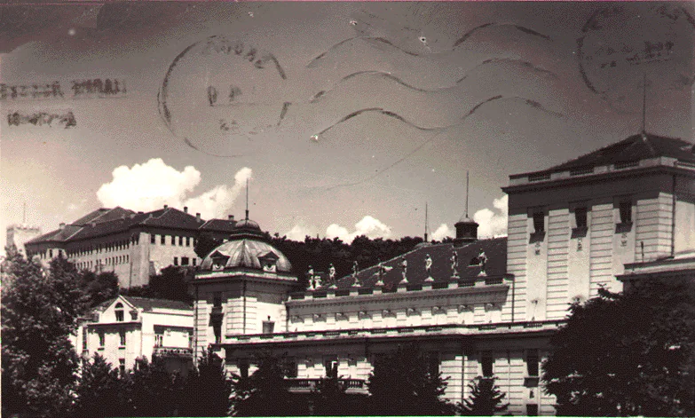
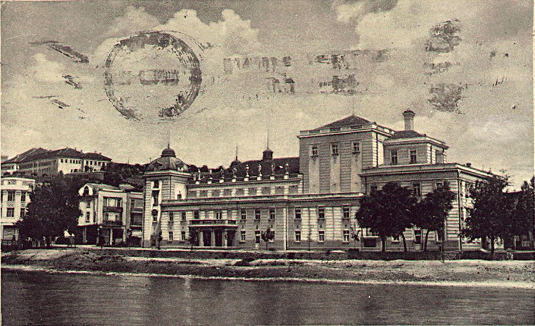
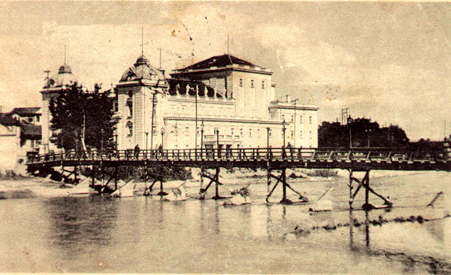
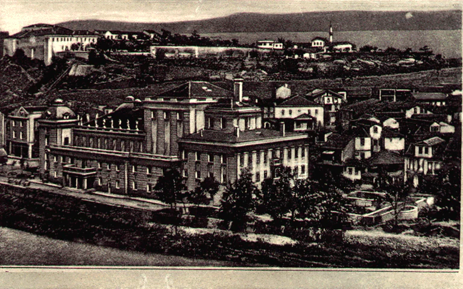
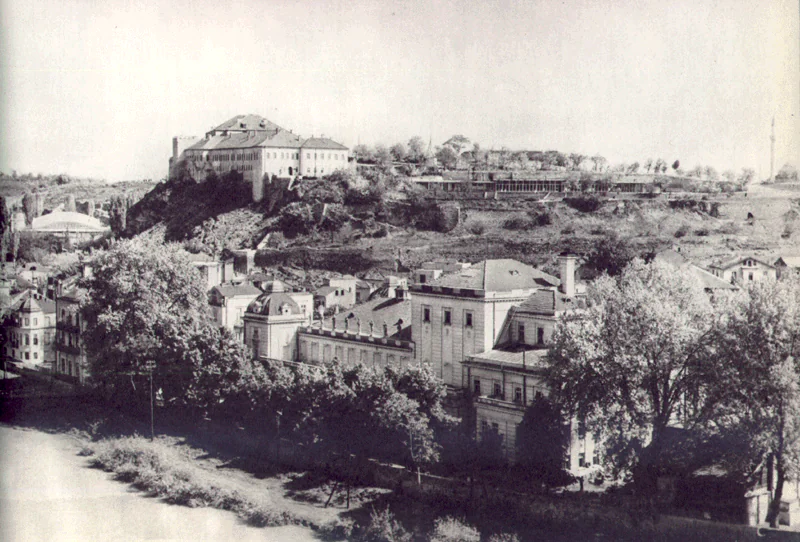

Açıklama
20. yüzyılın başına kadar ilk tiyatro gösterilerinin yapıldığı eski "Boges" kahvehanesi. 1902'de ilk tiyatro inşa edilir.

1902'de inşa edilen Türk tiyatrosu. - 20. yüzyılın başı.

Yahudi mahallesinin bir bölümü ve Üsküp Kalesi ile Türk tiyatrosu. (20. yüzyılın başı)

Milli Tiyatro'nun ana girişi. - 1930'lar. 26 Ekim 1927'de törenle açıldı. Mimarlar: J. Bukovac, E. Brandstein, S. Beljaevski, D. M. Leko, Petar Gočić ve V. Mesner.

Milli Tiyatro'nun ana girişi. - 1930'lar

Üsküp Kalesi ile Milli Tiyatro. (1930'lar)

Milli Tiyatro. (1930'lar)

Milli Tiyatro - gece. (1930'lar)

Milli Tiyatro'ya ve küçük ahşap köprüye bakış. (1930'lar)

Milli Tiyatro. (1930'lar)

Küçük ahşap köprüden Milli Tiyatro'nun görünümü. (1930'lar)

Küçük ahşap köprü ve Milli Tiyatro - 1930'lar.

Küçük ahşap köprü ve Milli Tiyatro - 1930'lar.

Milli Tiyatro ve ahşap köprü - 1930'lar.

Milli Tiyatro - 1930'lar.

Vardar'ın sağ kıyısından Milli Tiyatro'ya ve Üsküp Kalesi'ne bakış - 1930'lar.

Milli Tiyatro'nun doğu tarafından görünüm. Arka planda Şar Dağı'nın kütleleri - 1930'lar.

Milli Tiyatro ve Üsküp Kalesi - 1930'lar.

Subaylar Evi'nden çekilen fotoğraf - 1930 civarı. Milli Tiyatro'nun, küçük ahşap köprünün ve Üsküp Kalesi'nin harika bir görünümü.

Üsküp Kalesi ile Milli Tiyatro - 1930'lar.

Milli Tiyatro, küçük ahşap köprünün bir bölümü ve yeni yapılmış evler. Üst kısımda Üsküp Kalesi görülüyor - 1930'lar.

Milli Tiyatro ile bir grup modern ev ve Yahudi mahallesinin evleri. Sağda Yahudi mahallesinin gösterişli evlerinden bazıları. Tiyatronun üzerinde Üsküp Kalesi - 1930'lar.

Milli Tiyatro ve Yahudi mahallesi, üzerinde Üsküp Kalesi yükseliyor - 1930'lar.

Milli Tiyatro'nun panoramik görünümü, üzerinde kışlalarıyla Kale yükseliyor - 1930'lar.

Subaylar Evi'nin terasından Milli Tiyatro'nun görünümü - 1930'lar.

Subaylar Evi'nin terasından Milli Tiyatro'nun görünümü - 1930'lar.

Milli Tiyatro'nun panoramik görünümü, üzerinde Kale yükseliyor - 1950'ler.

Milli Tiyatro - 1950'ler.
Konum

Eski yönlendirme haritasında
Fotoğraf albümü


Konu
 Su kemeri4 kartpostal
Su kemeri4 kartpostal Kale30 kartpostal
Kale30 kartpostal Köprüler60 kartpostal
Köprüler60 kartpostal Rıhtım58 kartpostal
Rıhtım58 kartpostal Meydan46 kartpostal
Meydan46 kartpostal Binalar66 kartpostal
Binalar66 kartpostal Hristiyan kiliseleri19 kartpostal
Hristiyan kiliseleri19 kartpostal İslami yapılar33 kartpostal
İslami yapılar33 kartpostal Subaylar Evi29 kartpostal
Subaylar Evi29 kartpostal Tiyatro28 kartpostal
Tiyatro28 kartpostal Tren garı13 kartpostal
Tren garı13 kartpostal Okullar36 kartpostal
Okullar36 kartpostal Parklar12 kartpostal
Parklar12 kartpostal Pazarlar18 kartpostal
Pazarlar18 kartpostal Sokaklar38 kartpostal
Sokaklar38 kartpostal Panorama I60 kartpostal
Panorama I60 kartpostal Panorama II30 kartpostal
Panorama II30 kartpostal Kolajlar55 kartpostal
Kolajlar55 kartpostal Seller9 kartpostal
Seller9 kartpostal Deprem27 kartpostal
Deprem27 kartpostal Üsküp 200026 kartpostal
Üsküp 200026 kartpostal